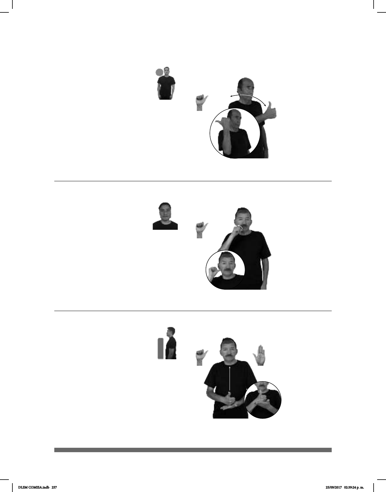

257
Ayer (A-74)
Ride (A-73)
SEMANA PASADA pro-YO PEDIR AVENTÓN LUGAR CASETA
La semana pasada pedí un aventón a la caseta.
AYER FIESTA pos-MI TRABAJO pos-MI PRIMO+MUJER dm-ESTELA pro-ELLA IR
(A-75)
YA PLATICAR pos-MI AYUDANTE
Ya platiqué con mi ayudante
Seña: SM
A.1
Palma oblicua hacia
la izquierda y hacia adentro.
A la altura de los
hombros.
Recto hacia la
izquierda repetidamente.
Simula la acción
de pedir un aventón o un ride en
carretera.
sust. m. Transporte
gratuito que ofrece alguna persona
a otra, ya sea para llevarla a su
destino o para acercarla a él.
Seña: SM
A.1
Palma hacia afuera.
Inicia sobre la barbilla
y termina sobre la mejilla.
La mano se mueve
formando un arco.
adv. El día que antece-
de inmediatamente al de hoy.
Seña: SB
MD A.1, MB B-P.2
MD palma hacia adentro,
MB palma hacia arriba.
De la cintura al pecho, MD
sobre MB.
Recto.
sust. f. y m. Persona que
ayuda en un trabajo, generalmente a
alguien que realiza la labor principal.
DLSM COMISA.indb 257 25/09/2017 02:39:24 p. m.